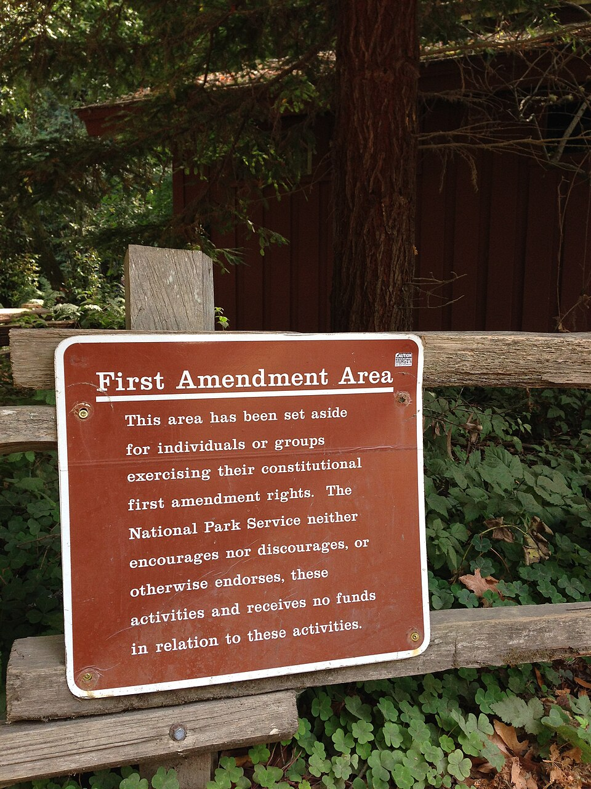

⚖️ Chapter 16: Civil Liberties and Civil Rights in Texas 🗽
Discover the freedoms Texans hold against government power, the long struggle for equal treatment, and the responsibilities that keep those rights alive!
🎓 Welcome, Trailblazer!
Enter your name to begin your journey through the rights and responsibilities of Texas citizens:
Liberties, Rights, and Why the Difference Matters
Learn the crucial difference between freedoms from government and guarantees of equal treatment, and why Texas has shaped both.
The Texas Bill of Rights
Explore Article I of the Texas Constitution, its Equal Rights Amendment, and where Texas protects more than the U.S. Constitution.
How Federal Rights Reach Texas: The Fourteenth Amendment
Discover how the Fourteenth Amendment brought the federal Bill of Rights to Texas through selective incorporation.
Freedom of Expression and Religion in Texas
From a burning flag in Dallas to Ten Commandments in classrooms: free speech, press, and the two religion clauses.
Due Process, Privacy, and the Rights of the Accused
Due process, the rights of the accused, and the right to privacy in Lawrence v. Texas and Roe v. Wade.
The Long Struggle for Civil Rights in Texas
Juneteenth, Jim Crow, and the landmark Texas cases that ended the white primary and extended equal protection.
Equal Protection Today: Ongoing Debates
Levels of scrutiny and today's debates over voting, immigration, affirmative action, and sex and gender.
Rights and Responsibilities: The Citizen's Side of the Bargain
The responsibilities that keep rights alive, and how one Texan can change the law for millions.
Liberties, Rights, and Why the Difference Matters
🎯 Learning Objectives
- Distinguish civil liberties from civil rights and explain why the difference matters.
- Explain why Texas has produced an unusual number of landmark rights cases.
Two of the most important words in American government are easy to confuse: liberties and rights. They sound alike and often travel together, but they point in opposite directions. Civil liberties are freedoms from government — limits on what the state may do to you. They protect your speech, your faith, your privacy, and your fair treatment in court. Civil rights, by contrast, are guarantees of equal treatment by government — promises that the state will not single people out for worse treatment because of who they are. Liberties tell government to stay out; rights tell government to treat everyone alike.
The distinction matters because the two can pull against each other. A business owner's liberty to run a shop as they please can collide with a customer's right not to be turned away because of their race. A speaker's liberty to say offensive things can collide with a community's desire for civility. Much of the drama in this chapter comes from the places where one person's liberty meets another person's right, and government must draw a line. There is rarely a line everyone accepts.
+15 points! ⚖️ A surprising Texas record!
Few states have shaped American rights law as much as Texas. The case that made flag burning protected speech began at a Dallas political convention (Texas v. Johnson). The case that ended the all-white primary was brought by a Houston dentist (Smith v. Allwright). The case that opened the University of Texas law school to a Black applicant helped pave the road to Brown v. Board of Education (Sweatt v. Painter). The first Supreme Court case to recognize Mexican Americans as a protected class came from a Texas county that had never seated one on a jury (Hernandez v. Texas). The right to privacy in intimate life (Lawrence v. Texas), the right of undocumented children to attend public school (Plyler v. Doe), and the modern rules on affirmative action (Fisher v. University of Texas) all came from here too.
Why Texas? Partly size and diversity: a huge, fast-growing state with large Black, Mexican American, and immigrant communities generated many disputes. Partly history: a strong tradition of local control and limited government meant state laws often tested federal limits. And partly the courage of individual Texans who were willing to take their cases all the way up.
+15 points! 📚 The same facts, two questions!
Imagine a Texas city passes an ordinance banning all protests within 500 feet of city hall. A group wants to march there. Their objection is a liberties claim: the city has no power to silence peaceful assembly. Now imagine the city allows some groups to march and denies others because of their message or their members' ethnicity. That is a rights claim: the city is treating people unequally.
Real cases often mix both. Keeping the two questions separate is the first skill of thinking clearly about rights — and it will help you follow every case in this chapter.
The Texas Bill of Rights
🎯 Learning Objectives
- Describe the Texas Bill of Rights (Article I) and explain why it comes first in the Texas Constitution.
- Identify protections in the Texas Constitution that go beyond the federal Bill of Rights.
Open the Texas Constitution of 1876 and the very first thing you find, before any description of the legislature, the governor, or the courts, is the Bill of Rights — Article I. That placement was no accident. In the U.S. Constitution, the Bill of Rights arrived only afterward, as ten amendments tacked on in 1791. The Texans of 1876, fresh from the bitter experience of Reconstruction and the powerful, centralized government of Governor E. J. Davis, wanted the limits on government stated up front. Their opening line is a declaration of purpose: the Bill of Rights exists so that “the general, great and essential principles of liberty and free government may be recognized and established.”
The result is a document that is longer and, in places, broader than its federal counterpart. Article I originally held 29 sections; amendments have since added more. Many track the federal Bill of Rights closely — freedom of worship, freedom of speech and press, protection against unreasonable searches, rights of the accused, the right to keep and bear arms. But several go further, and because Texas courts interpret the Texas Constitution independently, those provisions can give Texans protections the U.S. Constitution does not guarantee.
A simple image explains how the two constitutions fit together. The U.S. Constitution, as read by the Supreme Court, sets a floor: a minimum level of rights that no state may go below. A state constitution can raise the ceiling above that floor, protecting more than the federal minimum — but it can never lower the floor. Texas has raised its ceiling in several places, as this section shows.

+15 points! 📜 A statement of priorities!
The framers of 1876 had just lived through Reconstruction, when a strong governor and an active state government had, in their view, overridden local liberties. Their reaction shaped the whole constitution: a weak governor, a part-time legislature, and rights listed before powers. Putting the Bill of Rights at the front announced that individual liberty came before the machinery of government — and made it harder for any future legislature to overlook.
Section 29 makes the point explicit. It declares that everything in the Bill of Rights is “excepted out of the general powers of government” and that any law contrary to it “shall be void.” In other words, the rights are not favors the legislature grants; they are boundaries it cannot cross.
Liberty and equality. Section 1 declares Texas a free and independent state, subject only to the U.S. Constitution. Section 2 vests all political power in the people. Section 3 guarantees equal rights to all, and Section 3a — Texas's Equal Rights Amendment, adopted in 1972 — forbids denying equality under the law because of sex, race, color, creed, or national origin.
Religion. Section 6 protects freedom of worship and forbids the state from giving preference to any religious society. Section 4 bars any religious test for public office — though its 1876 text still carries a proviso about acknowledging a Supreme Being that courts have long treated as unenforceable. Section 7 bars public money for sectarian purposes.
Expression and assembly. Section 8 guarantees freedom of speech and of the press. Section 27 protects the right to assemble peaceably and to petition the government for redress of grievances.
Fair treatment by the justice system. Section 9 guards against unreasonable searches and seizures. Section 10 lists the rights of the accused: a speedy public trial by an impartial jury, the right to confront witnesses, the right to counsel, and the right not to be compelled to testify against oneself. Section 11 guarantees the right to bail, with exceptions that voters expanded in 2025 for certain violent offenses. Section 12 protects the writ of habeas corpus. Section 13 forbids excessive bail and cruel or unusual punishment and guarantees “open courts” — a remedy for every injury. Section 14 bars double jeopardy. Section 15 declares the right of trial by jury “inviolate.” Section 19 guarantees that no one may be deprived of life, liberty, or property except by “due course of the law of the land.” Section 30, added in 1989, guarantees rights to crime victims.
Property and economic liberty. Section 16 forbids bills of attainder, ex post facto laws, and laws impairing contracts. Section 17 requires just compensation when property is taken for public use. Section 18 bans imprisonment for debt. Section 26 declares monopolies “contrary to the genius of a free government.”
Arms, the military, and the guarantee itself. Section 23 protects the right to keep and bear arms while letting the legislature regulate the wearing of arms to prevent crime. Section 24 keeps the military subordinate to civil authority. And Section 29 makes the whole list binding: every right here is “excepted out of the general powers of government,” and any law contrary to it “shall be void.”
+15 points! 📚 The state ceiling in action!
Recall the floor-and-ceiling image from the introduction: the U.S. Constitution is the floor states may not go below, and a state constitution may build a higher ceiling. Texas has done so in several ways. The Texas Constitution bans imprisonment for debt (Section 18) and guarantees an “open courts” provision (Section 13) that the Texas Supreme Court has used to strike down laws it found blocked injured people from bringing suit. Texas courts have at times read the state's search-and-seizure and free-speech provisions more protectively than the federal versions.
The practical lesson: a Texan whose federal claim fails may still win under the Texas Constitution. Lawyers in Texas routinely plead both. Understanding that Texans hold rights from two sources — and that the state source can be the more generous one — is essential to understanding civil liberties here.
+15 points! ⚖️ A guarantee the nation never adopted!
In 1972, Texas voters added Section 3a to the Bill of Rights: “Equality under the law shall not be denied or abridged because of sex, race, color, creed, or national origin.” The federal Equal Rights Amendment, proposed by Congress the same year, was never ratified by enough states and never became part of the U.S. Constitution. Texas's version did — and it lists more protected categories than the federal proposal, which addressed sex alone.
This is the clearest example of Texas raising its ceiling above the federal floor. When a Texan claims sex discrimination by the state, Section 3a provides a textual guarantee that the U.S. Constitution states only by judicial interpretation of the Fourteenth Amendment.
How Federal Rights Reach Texas: The Fourteenth Amendment
🎯 Learning Objectives
- Explain how the federal Bill of Rights came to apply to Texas through the Fourteenth Amendment and selective incorporation.
- Explain the “federal floor, state ceiling” relationship between the two constitutions.
Here is a fact that surprises most students: for the first eighty years of the republic, the Bill of Rights did not apply to the states at all. In Barron v. Baltimore (1833), the Supreme Court held that the first ten amendments restrained only the federal government. A state could censor a newspaper or search a home without a warrant, and the federal Constitution had nothing to say about it. Texans of that era looked to their state constitution for protection.
That changed after the Civil War. The Fourteenth Amendment, ratified in 1868, commanded that no state shall “deprive any person of life, liberty, or property, without due process of law; nor deny to any person within its jurisdiction the equal protection of the laws.” Over the following century, the Supreme Court used the Due Process Clause to apply most of the Bill of Rights to the states one provision at a time — a process called selective incorporation. Free speech was incorporated in 1925, freedom of religion in the 1940s, the rights of the accused mostly in the 1960s, and the right to bear arms in 2010. Each incorporation meant that Texas, like every state, was now bound by that federal guarantee.

+15 points! 🏛️ The amendment that changed everything!
The Fourteenth Amendment does not say “the Bill of Rights now applies to the states.” It says states may not deny “liberty” without due process. Beginning with Gitlow v. New York (1925), the Court reasoned that certain liberties in the Bill of Rights are so fundamental that they are part of the “liberty” the Fourteenth Amendment protects against the states. The Court did this selectively, one right at a time, rather than all at once.
Today nearly the entire Bill of Rights has been incorporated. The main exceptions are the Fifth Amendment's grand jury requirement and the Seventh Amendment's civil jury right — which is why Texas can, and does, structure those matters under its own rules. Every time you read that a Texas law was struck down for violating “the First Amendment,” incorporation is the reason a federal amendment reached a state law at all.
+15 points! 📚 How the two constitutions fit together!
Think of rights as a building. The U.S. Constitution, as interpreted by the Supreme Court, is the floor: the minimum protection every American has, in every state. Texas cannot dig below it. The Texas Constitution and Texas courts can raise the ceiling higher — protecting more than the federal minimum — but can never lower the floor.
This has real consequences. When the U.S. Supreme Court narrows a federal right, Texans do not necessarily lose it; Texas courts may keep protecting it under Article I. When the Supreme Court expands a federal right, Texas must comply even if Texas law says otherwise. The two systems are in constant conversation, and a good citizen watches both.
Freedom of Expression and Religion in Texas
🎯 Learning Objectives
- Explain the protections and limits of free speech, press, and assembly, using Texas v. Johnson.
- Distinguish the Establishment Clause from the Free Exercise Clause and analyze a current Texas religious-liberty dispute.
The First Amendment packs several freedoms into a single sentence: religion, speech, press, assembly, and petition. Together they protect the ability of citizens to think, believe, argue, and organize without government permission — the raw materials of self-government. The Texas Constitution echoes and, in some respects, extends them in Article I, Sections 6 through 8 and 27. This section looks at expression first, then religion, using Texas cases that reached the nation's highest court.

+15 points! 🗽 A Texas case that defined free speech!
During the 1984 Republican National Convention in Dallas, a protester named Gregory Lee Johnson doused an American flag in kerosene and set it on fire while demonstrators chanted. No one was hurt. Johnson was convicted under a Texas law against desecrating a venerated object and sentenced to a year in jail and a $2,000 fine. Texas argued the law protected the flag as a symbol of national unity and prevented breaches of the peace.
In 1989 the Supreme Court, by a 5–4 vote, reversed the conviction. Justice William Brennan wrote that burning the flag in political protest was expressive conduct protected by the First Amendment, and that the government may not prohibit expression simply because society finds it offensive. In his words, “If there is a bedrock principle underlying the First Amendment, it is that the government may not prohibit the expression of an idea simply because society finds the idea itself offensive or disagreeable.” Congress responded with a federal flag-protection law, which the Court also struck down the next year. The case remains the leading statement that free speech protection does not depend on approval of the message.
+15 points! ⚖️ Two guarantees that can pull against each other!
The First Amendment contains two religion clauses. The Establishment Clause forbids government from establishing or endorsing religion — no official church, no state-sponsored worship. The Free Exercise Clause forbids government from interfering with individuals' practice of their faith. Article I, Section 6 of the Texas Constitution protects free worship and bars religious tests for public office.
The two clauses can create tension. If a public school lets a student group pray on campus, is it accommodating free exercise or establishing religion? If a state exempts religious objectors from a general law, is it protecting free exercise or favoring religion? For decades the Supreme Court used the three-part Lemon test to answer Establishment Clause questions. In recent years it has shifted toward asking whether a practice fits the nation's history and traditions — a change that is reshaping how courts treat cases like the one below.
+15 points! 📜 A dispute still unfolding!
In 2025 the Texas Legislature passed Senate Bill 10, requiring every public-school classroom in the state to display a specific version of the Ten Commandments. It passed the House 82–46 and the Senate 20–11, and Governor Abbott signed it. Supporters argued that the Commandments are a foundation of Western law and American moral tradition, that a passive display coerces no one, and that recent Supreme Court decisions favor practices rooted in history. Opponents, including a multifaith group of Texas families, argued that mandating one faith's scripture in every classroom pressures children of other faiths and no faith, intrudes on parents' right to direct their children's religious upbringing, and conflicts with Stone v. Graham (1980), in which the Supreme Court struck down a nearly identical Kentucky law.
The courts split. In August 2025 a federal district judge blocked the law for the districts being sued. In April 2026 the full Fifth Circuit Court of Appeals, by a narrow 9–8 vote, reversed that ruling and upheld the law, holding that a passive display does not establish religion under the Court's history-and-tradition approach. The families have asked the U.S. Supreme Court to hear the case. Whatever the outcome, the dispute shows the Establishment Clause being redefined in real time — and Texas, once again, at the center of it.
Due Process, Privacy, and the Rights of the Accused
🎯 Learning Objectives
- Explain what due process requires and identify the core rights of the accused in Texas.
- Explain the constitutional right to privacy and the significance of Lawrence v. Texas and Roe v. Wade.
Both constitutions promise that government may not take a person's life, liberty, or property without due process of law — what the Texas Constitution calls “due course of law.” The phrase carries two meanings. Procedural due process is about fair procedures: notice, a hearing, an impartial decision-maker, the chance to defend yourself. Substantive due process is about limits on what government may do at all, however fair the procedure — the idea that some liberties are so fundamental that no ordinary law may take them away. Chapter 13 walked through the criminal process step by step; this section looks at the rights that process is built to protect.

+15 points! ⚖️ The rights that protect everyone!
The rights of the accused are spread across several amendments, and the Texas Bill of Rights lists most of them in a single section (Article I, Section 10). The Fourth Amendment and Texas Section 9 forbid unreasonable searches and seizures and generally require a warrant based on probable cause. The Fifth Amendment guarantees the right to remain silent and bars double jeopardy. The Sixth Amendment and Texas Section 10 promise a speedy public trial by an impartial jury, the right to confront witnesses, and the right to a lawyer — which Gideon v. Wainwright (1963) extended to defendants who cannot afford one. The Eighth Amendment and Texas Section 13 forbid excessive bail and cruel or unusual punishment.
These protections exist for the guilty and the innocent alike, because the whole point is that we do not know which is which until a fair process decides. A right that applied only to people we already believed innocent would protect no one.
+15 points! 🔍 A landmark from Harris County!
The Constitution never uses the word “privacy,” yet the Supreme Court has held since Griswold v. Connecticut (1965) that the Constitution protects a zone of personal privacy, drawn from the liberty guaranteed by due process and from other amendments. Texas produced one of the most important privacy rulings. In 1998, Houston police, responding to a false report, entered an apartment and arrested two men for violating Texas's law against same-sex intimate conduct. They were convicted and fined.
In Lawrence v. Texas (2003), the Supreme Court struck down the Texas law by a 6–3 vote. Justice Anthony Kennedy wrote that adults have a liberty interest, protected by the Due Process Clause, in private consensual relationships, and that the state could not make that conduct a crime. The decision overruled a 1986 case that had reached the opposite result. Lawrence became a foundation for later rulings on the rights of gay and lesbian Americans, including the 2015 decision recognizing same-sex marriage.
+15 points! 📜 Fifty years, two rulings, one state!
In 1970 a Dallas County woman identified in court as “Jane Roe” challenged Texas's law banning nearly all abortions. In Roe v. Wade (1973), the Supreme Court held 7–2 that the constitutional right to privacy included a woman's decision whether to end a pregnancy, subject to state regulation that increased as the pregnancy progressed. For nearly fifty years the ruling set the framework for abortion law nationwide, and Texas — the state where it began — was among its most persistent challengers.
In Dobbs v. Jackson Women's Health Organization (2022), the Court overruled Roe, holding 6–3 that the Constitution does not protect a right to abortion and returning the question to the states. Texas had prepared: a 2021 “trigger law” took effect and banned nearly all abortions, with an exception to protect the life or major bodily function of the pregnant patient. Supporters of the ban hold that the unborn are persons deserving legal protection and that such questions belong to elected legislatures, not courts. Opponents hold that the decision belongs to the individual and that the ban endangers women's health and liberty. In 2025 the Legislature passed the Life of the Mother Act to clarify when doctors may act in medical emergencies; it did not add new exceptions. Few issues divide Texans more sharply, and Roe and Dobbs together show how far the reach of “privacy” can move — in both directions.
The Long Struggle for Civil Rights in Texas
🎯 Learning Objectives
- Trace the history of civil rights struggles in Texas for Black and Mexican American Texans.
- Identify the landmark Texas cases Smith v. Allwright, Sweatt v. Painter, and Hernandez v. Texas and explain their significance.
Civil rights were not handed down; they were won, slowly and at real cost, by Texans who refused to accept second-class citizenship. The story begins with slavery, which Texas defended in the Civil War, and with its ending: on June 19, 1865, Union General Gordon Granger arrived in Galveston and announced that all enslaved people in Texas were free. That day, Juneteenth, is now a state and federal holiday. Freedom on paper, however, was followed by a century of effort to make it real.

After Reconstruction ended, Texas, like the rest of the former Confederacy, built a system of racial segregation and disenfranchisement known as Jim Crow. A poll tax adopted in 1902 priced poor Black, Mexican American, and white Texans out of the ballot box. Schools, transportation, and public accommodations were segregated by law. And the Democratic Party — which controlled every office in a one-party state — barred Black Texans from its primary, the only election that mattered. Because the primary decided everything, the white primary made Black votes meaningless.
+15 points! ✊ A voting-rights victory that changed the South!
Dr. Lonnie E. Smith, a Black dentist in Houston, was turned away from voting in the 1940 Democratic primary. Backed by the NAACP and represented by a young attorney named Thurgood Marshall — the future Supreme Court justice — Smith sued the election judge, S. E. Allwright. Texas had defended the white primary for two decades, and in 1935 the Supreme Court had allowed it, reasoning that a political party was a private club free to choose its members.
In Smith v. Allwright (1944), the Court reversed itself by an 8–1 vote. Because Texas law regulated the primary in detail and the primary effectively chose the state's officials, the Court held that the party was carrying out a public function and could not discriminate by race. The decision struck down white primaries across the South and is remembered as one of the first great victories of the modern civil rights movement. Black voter registration in Texas rose sharply in the years that followed.
+15 points! 🎓 Separate was not equal!
In 1946 Heman Marion Sweatt, a Black mail carrier from Houston, applied to the University of Texas School of Law. He was qualified, but Texas law barred Black students. Rather than admit him, the state hastily created a separate law school for Black Texans — at first a few rented rooms in Austin, with part-time faculty and a small library. Sweatt refused to attend and sued, again with Thurgood Marshall at his side.
In Sweatt v. Painter (1950), a unanimous Supreme Court ordered the University of Texas to admit him. Chief Justice Fred Vinson wrote that the makeshift school could not be equal to UT Law in the things that make a law school great — its faculty, its reputation, its alumni, the standing of its graduates. It was the first time the Court held that a segregated professional school was unequal in fact, and its reasoning was a direct stepping stone to Brown v. Board of Education four years later, which declared segregated public schools unconstitutional everywhere.

+15 points! ⚖️ The first Mexican American civil rights case at the Supreme Court!
Mexican Americans in Texas faced their own segregation: separate “Mexican schools,” restricted housing, and signs reading “No Mexicans.” A 1948 federal case, Delgado v. Bastrop ISD, ended the formal segregation of Mexican American schoolchildren. But the most important ruling came from a murder trial. Pete Hernandez was convicted by an all-Anglo jury in Jackson County, where in 25 years not a single person of Mexican descent had ever served on a jury, though they made up a substantial share of the population.
His lawyers — Gus Garcia and Carlos Cadena, working with LULAC and the American GI Forum — argued that the Fourteenth Amendment's equal protection guarantee covered Mexican Americans, not just Black and white citizens. In Hernandez v. Texas, decided unanimously on May 3, 1954 — two weeks before Brown — Chief Justice Earl Warren agreed. Any group treated as “a class apart” and singled out for discrimination is protected, he wrote. It was the first Supreme Court case argued by Mexican American attorneys and the first to extend equal protection beyond a Black-white framework. Its logic protects every ethnic group in America today.
Equal Protection Today: Ongoing Debates
🎯 Learning Objectives
- Explain the Equal Protection Clause and the three levels of judicial scrutiny.
- Analyze current civil rights debates in Texas — voting, education, affirmative action, sex and gender, immigration — from multiple perspectives.
The Fourteenth Amendment forbids a state to “deny to any person within its jurisdiction the equal protection of the laws.” Yet governments classify people constantly — by age, income, occupation, residency, and more — and most classifications are perfectly legal. The hard question is which distinctions are forbidden. Courts answer with a sliding scale called levels of scrutiny, and knowing it is the key to understanding almost every modern civil rights fight.
+15 points! ⚖️ The framework behind every equal-protection case!
Strict scrutiny applies to classifications by race or national origin and to laws burdening fundamental rights. Government must show a compelling interest and a law narrowly tailored to it. Almost no racial classification survives this test. Intermediate scrutiny applies to classifications by sex: the law must serve an important interest and be substantially related to it. Rational-basis review applies to everything else: the law need only be rationally related to a legitimate purpose, and it almost always survives.
Where a group lands on this scale often decides the case before the facts are heard. Much of the argument over civil rights today is really an argument over which level of scrutiny a particular classification deserves — and Texas courts add a second layer, since the Texas ERA names race, sex, color, creed, and national origin explicitly.
+15 points! 🎓 A Texas ruling still shaping the nation!
In 1975 Texas passed a law withholding state funds for the education of children who were not lawfully admitted to the United States, and allowing districts to bar them. Families in Tyler challenged it. In Plyler v. Doe (1982), the Supreme Court struck down the law by a 5–4 vote. Justice Brennan reasoned that the children had done nothing wrong, that denying them an education would create a permanent underclass, and that Texas had shown no substantial interest served by the law. The Equal Protection Clause, the Court held, protects every person within a state's jurisdiction, regardless of immigration status.
Plyler remains the law today, and every public school in Texas educates children without asking about immigration status. It also anchors a continuing debate. Texas has repeatedly tested the limits of state authority over immigration — most recently through a 2023 law, Senate Bill 4, that made unlawful entry a state crime and authorized state officers to arrest and remove migrants. The law was challenged in federal court as conflicting with the national government's authority over immigration, and litigation has continued. Supporters argue that a border state must be able to protect itself when federal enforcement falls short; opponents argue that immigration is a federal responsibility and that state enforcement invites profiling. The dispute is as much about federalism as about rights.
+15 points! 🗳️ Security and access in tension!
The Voting Rights Act of 1965 once required Texas to obtain federal approval for any change to its election laws. That requirement ended when the Supreme Court struck down the Act's coverage formula in Shelby County v. Holder (2013), and Texas has since made several major changes. A 2011 voter-identification law, among the nation's strictest, was found by federal courts to burden minority voters; the Legislature revised it in 2017 to allow alternatives for voters who lack photo ID. In 2021 the Legislature passed Senate Bill 1, which ended drive-through and 24-hour voting, added identification requirements for mail ballots, expanded the role of partisan poll watchers, and regulated who may assist voters.
Supporters of these laws argue they protect the integrity of elections, prevent fraud, and increase public confidence. Opponents argue they make voting harder, especially for elderly, disabled, minority, and low-income Texans, in the name of preventing fraud that, they contend, is rare. Federal courts have upheld some provisions of SB 1 and struck down others, and litigation over the law and over Texas's redistricting maps has continued. Reasonable people weigh the goals of security and access differently; the Constitution requires that whatever balance the state strikes not deny any group the equal protection of the laws.
+15 points! 🎓 Texas at the center of the admissions debate!
Texas has been a laboratory for the fight over race in college admissions. In Hopwood v. Texas (1996), a federal appeals court barred Texas universities from considering race at all. The Legislature responded with the Top 10 Percent Plan, guaranteeing admission to any Texas public university for students graduating in the top tenth of their high school class — a race-neutral policy that nonetheless increased diversity because Texas high schools remain largely segregated by neighborhood. After the Supreme Court permitted limited use of race in 2003, UT added a modest race-conscious element for students admitted outside the plan.
Abigail Fisher, a white applicant denied admission, challenged that element. In Fisher v. University of Texas (2013 and 2016), the Supreme Court ultimately upheld UT's program by a 4–3 vote as narrowly tailored. Then in 2023, in a case from Harvard and North Carolina, the Court held that race-conscious admissions violate equal protection, ending the practice nationwide. The same year the Texas Legislature passed Senate Bill 17, closing diversity, equity, and inclusion offices at public universities. Supporters of these changes argue that the Constitution is colorblind and that race-based preferences are themselves discrimination; opponents argue that race-neutral policies cannot undo the effects of past discrimination and that diverse campuses benefit everyone. The Top 10 Percent Plan, meanwhile, remains in force.
Rights and Responsibilities: The Citizen's Side of the Bargain
🎯 Learning Objectives
- Describe the responsibilities that accompany the rights of Texas citizens.
- Explain how individual citizens exercise, protect, and expand their rights.
Every right in this chapter has a hidden condition: it depends on citizens to make it work. Rights are not self-enforcing. A Bill of Rights is only paper until people know what it says, insist that it be honored, and accept the duties that come with it. The Texas Constitution says as much in its opening words, describing rights as the principles of “free government” — a government that stays free only as long as its citizens do their part. This closing section turns from what government owes you to what you owe the community that secures your rights.

+15 points! ⚖️ The most important civic job most people try to avoid!
Consider what the Hernandez case was really about. Pete Hernandez had a right to a jury drawn from his community. That right was only real because ordinary Texans showed up to serve. When a county excluded Mexican Americans from juries for a quarter century, it denied both a right and a responsibility at once. The jury is the one place where ordinary citizens directly exercise the power of the state — deciding guilt, awarding damages, checking prosecutors and judges alike.
That is why jury service is a legal duty in Texas and why the Texas Bill of Rights guarantees that “the right of trial by jury shall remain inviolate.” A citizen who dodges jury duty weakens the very right they might one day need. The same logic applies to the other core duties: obeying the law, paying the taxes that fund courts and schools, and answering when the community calls.
+15 points! 🗽 The lesson of a burning flag!
Gregory Lee Johnson's flag burning offended most Americans. But the principle the Court announced protects everyone: a government with the power to silence him would have the power to silence you. Rights are indivisible in a practical sense. Free speech for a protester whose views you reject is what guarantees free speech for the cause you support. Religious liberty for a faith you find strange is what protects your own. Due process for the accused you are sure is guilty is what protects you if you are ever accused falsely.
This is the hardest responsibility of citizenship: to defend a liberty even when it shelters someone you oppose. It requires the willingness to separate whether a person should have a right from whether you like how they use it. Citizens who master that distinction keep liberty alive; those who demand rights only for their own side eventually lose them for everyone.
+15 points! 🌟 The power of a single citizen!
It is easy to read this chapter as a story about the Supreme Court. It is really a story about individuals. A dentist who insisted on voting. A mail carrier who wanted to study law. A defendant who demanded a fair jury. Sixteen families who objected to a classroom poster. A group of parents in Tyler who wanted their children educated. None of them held office. None of them had power. Each of them used the tools available to every citizen — the courts, the ballot, organizations like LULAC and the NAACP, and the simple refusal to accept an injustice — and each changed the law for millions of people they would never meet.
That is the bargain at the heart of free government. Rights protect you; responsibilities are how you protect them. The next landmark case has not been filed yet. It will begin, as all the others did, with one person who knew their rights and was willing to act.
Chapter Review & Resources
Use this page to review Chapter 16. It gathers the chapter summary, key terms, self-check review questions, critical-thinking prompts, and sources for further study. This page is for study only and is not scored.
📝 Chapter Summary
Texans hold their rights from two constitutions at once. Civil liberties are freedoms from government — speech, religion, privacy, due process; civil rights are guarantees of equal treatment by government. The Texas Constitution puts its Bill of Rights first (Article I) and in places protects more than the federal minimum, including an Equal Rights Amendment the nation never adopted. Federal rights reach Texas through the Fourteenth Amendment and selective incorporation: the U.S. Constitution sets a floor, and Texas may raise the ceiling. Texas has shaped these rights for the whole nation — Texas v. Johnson protected offensive speech; Lawrence v. Texas protected private life; and, in the long struggle for civil rights, Smith v. Allwright ended the white primary, Sweatt v. Painter paved the road to Brown, and Hernandez v. Texas extended equal protection to Mexican Americans. Today's debates — over religious displays in classrooms, voting rules, immigration, affirmative action, and sex and gender — turn on the levels of scrutiny and on where a diverse society draws its lines, and this chapter presents each side's strongest case. Finally, rights depend on responsibilities: voting, serving on juries, obeying the law, staying informed, and defending the liberties of people we oppose. Every landmark case began with one Texan who knew their rights and acted.
🔑 Key Terms
- Civil liberties
- Freedoms from government — limits on what the state may do to individuals (speech, religion, privacy, due process).
- Civil rights
- Guarantees of equal treatment by government — protection against discrimination based on who a person is.
- Texas Bill of Rights
- Article I of the 1876 Texas Constitution, placed first to state the limits on government before its powers; longer and in places broader than the federal Bill of Rights.
- Texas Equal Rights Amendment
- Article I, Section 3a (1972): equality under the law may not be denied because of sex, race, color, creed, or national origin.
- Fourteenth Amendment
- The 1868 amendment whose Due Process and Equal Protection Clauses bind the states, including Texas.
- Selective incorporation
- The process by which the Supreme Court applied most of the federal Bill of Rights to the states, one provision at a time, through the Due Process Clause.
- Federal floor, state ceiling
- The principle that the U.S. Constitution sets a minimum of rights states may not go below, while state constitutions may protect more.
- Procedural due process
- The requirement of fair procedures — notice, a hearing, an impartial decision-maker — before government deprives someone of life, liberty, or property.
- Substantive due process
- The doctrine that certain fundamental liberties may not be taken away by any law, however fair the procedure.
- Equal Protection Clause
- The Fourteenth Amendment guarantee that no state may deny any person the equal protection of the laws.
- Levels of scrutiny
- The sliding scale courts use in equal-protection cases: strict (race, fundamental rights), intermediate (sex), and rational basis (everything else).
- Establishment Clause
- The First Amendment bar on government establishing or endorsing religion.
- Free Exercise Clause
- The First Amendment protection of individuals' freedom to practice their religion.
- Symbolic speech
- Expressive conduct, such as flag burning, that the First Amendment protects like spoken words.
- Right to privacy
- A constitutional zone of personal autonomy, implied rather than listed, recognized in Griswold (1965) and applied in Lawrence v. Texas.
- White primary
- The practice of barring Black voters from the Democratic primary — the decisive election in one-party Texas — struck down in Smith v. Allwright (1944).
- Poll tax
- A fee required to vote, adopted by Texas in 1902 to suppress poor and minority voters; abolished by the 24th Amendment (1964) and Harper (1966).
- Jim Crow
- The system of legal racial segregation and disenfranchisement in the South after Reconstruction.
- Juneteenth
- June 19, 1865, when Union troops in Galveston announced the end of slavery in Texas; now a state and federal holiday.
- LULAC
- The League of United Latin American Citizens, founded in Corpus Christi in 1929; the oldest Latino civil rights organization in the U.S.
- American GI Forum
- A Mexican American civil rights and veterans' organization founded in 1948 by Dr. Hector P. Garcia.
- Texas v. Johnson (1989)
- Held that burning the flag in political protest is protected symbolic speech, even though offensive to many.
- Smith v. Allwright (1944)
- Struck down the Texas white primary, holding a party running the decisive election performs a public function and may not discriminate.
- Sweatt v. Painter (1950)
- Ordered UT Law to admit a Black applicant, holding a makeshift separate school was not equal; a direct precursor to Brown.
- Hernandez v. Texas (1954)
- Held that the Equal Protection Clause protects Mexican Americans as a class — the first extension beyond a Black-white framework.
- Lawrence v. Texas (2003)
- Struck down Texas's law against private consensual same-sex conduct as a violation of the liberty protected by due process.
- Plyler v. Doe (1982)
- Held that Texas may not deny undocumented children a free public education under the Equal Protection Clause.
- Fisher v. University of Texas (2013, 2016)
- Upheld UT's narrowly tailored race-conscious admissions; superseded by the 2023 decision ending race-conscious admissions nationwide.
- Top 10 Percent Plan
- Texas's race-neutral policy guaranteeing state-university admission to students in the top tenth of their high school class.
- Voting Rights Act (1965)
- The federal law barring racially discriminatory election practices; its preclearance requirement for Texas ended after Shelby County (2013).
✅ Review Questions
Test your recall, then click each question to reveal the answer.
1. What is the difference between civil liberties and civil rights?
Answer: Civil liberties are freedoms from government (limits on what the state may do to you); civil rights are guarantees of equal treatment by government.
2. How does the Texas Bill of Rights differ from the federal one?
Answer: It comes first (Article I) rather than as later amendments, is longer and in places broader, includes an Equal Rights Amendment the nation never ratified, and can be read by Texas courts to protect more than the federal minimum.
3. How did the federal Bill of Rights come to apply to Texas?
Answer: Through the Fourteenth Amendment's Due Process Clause and selective incorporation, which applied most federal rights to the states one at a time.
4. What did Texas v. Johnson hold, and why does it matter?
Answer: That flag burning in protest is protected symbolic speech; government may not ban expression merely because it is offensive — a principle that protects everyone's speech.
5. Name the three landmark Texas civil rights cases of the 1940s-50s and what each did.
Answer: Smith v. Allwright ended the white primary; Sweatt v. Painter desegregated UT Law and paved the way for Brown; Hernandez v. Texas extended equal protection to Mexican Americans as a class.
6. What are the three levels of scrutiny?
Answer: Strict (race, fundamental rights: compelling interest, narrowly tailored), intermediate (sex: important interest, substantially related), and rational basis (everything else: legitimate purpose).
7. What is the current status of Texas's Ten Commandments classroom law?
Answer: A district judge blocked it in 2025; the full Fifth Circuit upheld it 9–8 in April 2026; the challengers have asked the U.S. Supreme Court to hear the case.
🤔 Critical-Thinking Questions
These open-ended questions have no single correct answer; use them for discussion or writing.
- Rights protect the guilty and the innocent, the popular and the unpopular, alike. Is there any liberty you would deny to people you strongly oppose? What would that cost you?
- Texas's constitution can protect more than the U.S. Constitution requires. Should rights vary from state to state, or should they be uniform nationwide? Defend your view.
- The Ten Commandments dispute pits sincere religious tradition against sincere concern about government favoring one faith. Where should a diverse society draw the Establishment Clause line?
- Lonnie Smith, Heman Sweatt, and Pete Hernandez each risked a great deal to win rights for people they never met. What does their example suggest about how civil rights actually advance?
- Choose one current debate — voting rules, immigration, affirmative action, or sex and gender — and state the strongest case for each side fairly. Which level of scrutiny should apply, and why?
📚 References & Further Study
- Texas Constitution, Article I (Bill of Rights). statutes.capitol.texas.gov
- U.S. Constitution, First and Fourteenth Amendments. National Archives
- Landmark cases with opinions and oral arguments — Texas v. Johnson, Smith v. Allwright, Sweatt v. Painter, Hernandez v. Texas, Lawrence v. Texas, Plyler v. Doe, Fisher v. Texas. Oyez
- Handbook of Texas Online (TSHA) — entries on Juneteenth, the white primary, LULAC, the American GI Forum, Heman Sweatt, and Barbara Jordan. tshaonline.org/handbook
- OpenStax, American Government 3e (CC BY 4.0), chapters on civil liberties and civil rights. openstax.org
- Image credits: Wikimedia Commons (public domain), as noted on each image.
Use your browser's "Save as PDF" option. Submit this PDF — screenshots will not be accepted.
TCC Trailblazer Trek - Completion Report
Chapter 8: Voting and Political Participation in Texas
| Section | Topic | Status | Points | Time |
|---|---|---|---|---|
| 1 | Voting in a Changing Texas | ❌ | 0/155 | --:-- |
| 2 | Voter Registration | ❌ | 0/205 | --:-- |
| 3 | Types of Elections in Texas | ❌ | 0/220 | --:-- |
| 4 | History of Voting Rights | ❌ | 0/205 | --:-- |
| 5 | Voter Decision Making | ❌ | 0/220 | --:-- |
| 6 | Voter Turnout in Texas | ❌ | 0/205 | --:-- |
| 7 | Increasing Voter Turnout | ❌ | 0/205 | --:-- |
| 8 | Political Participation Beyond Voting | ❌ | 0/270 | --:-- |
⏱️ Time Analysis
📝 Instructor Note
This report documents the student's completion of Chapter 8: Voting and Political Participation in Texas. Time spent per section is tracked automatically—sections completed faster than expected will trigger a pacing alert.